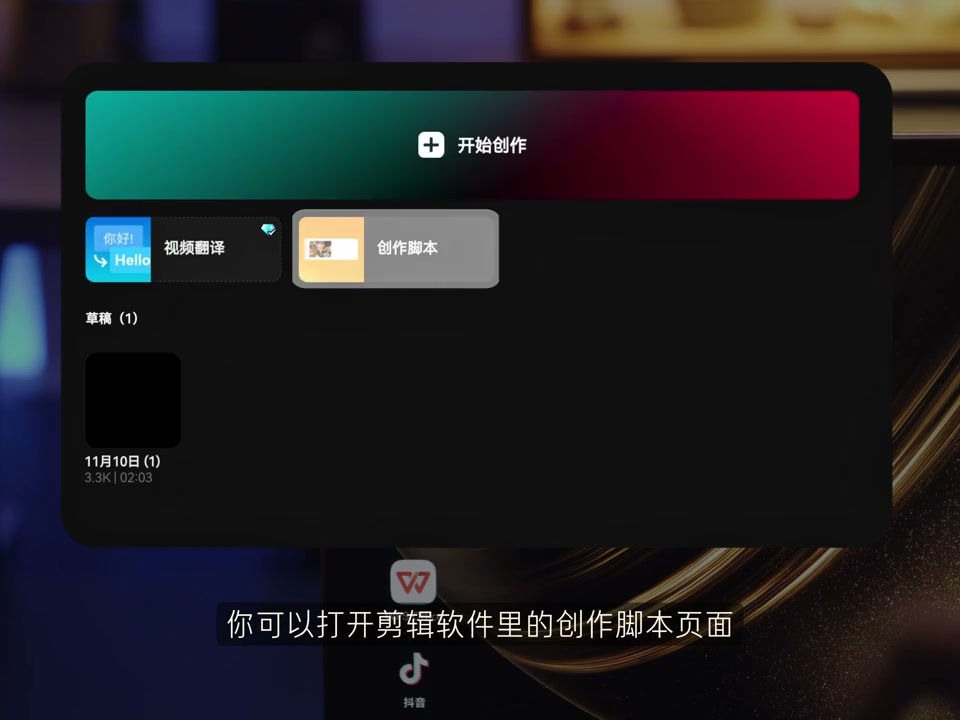
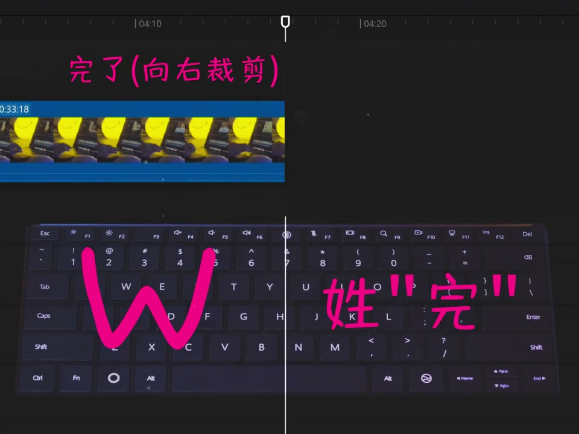
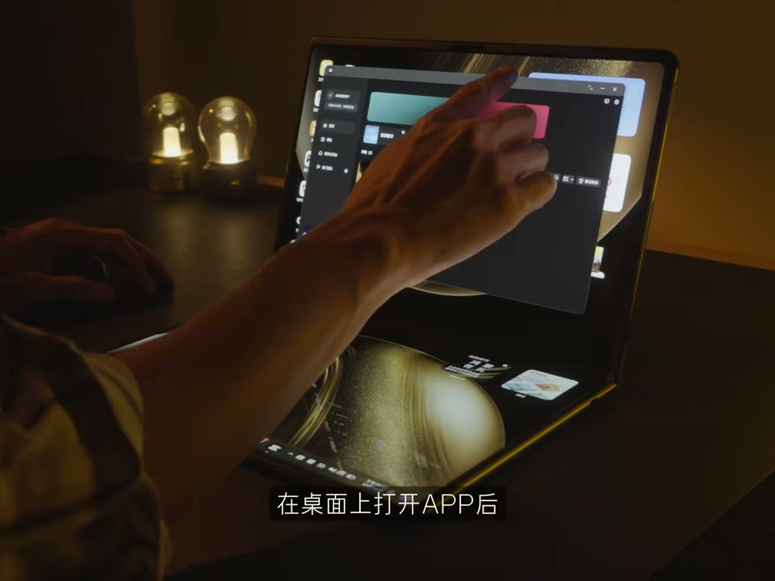
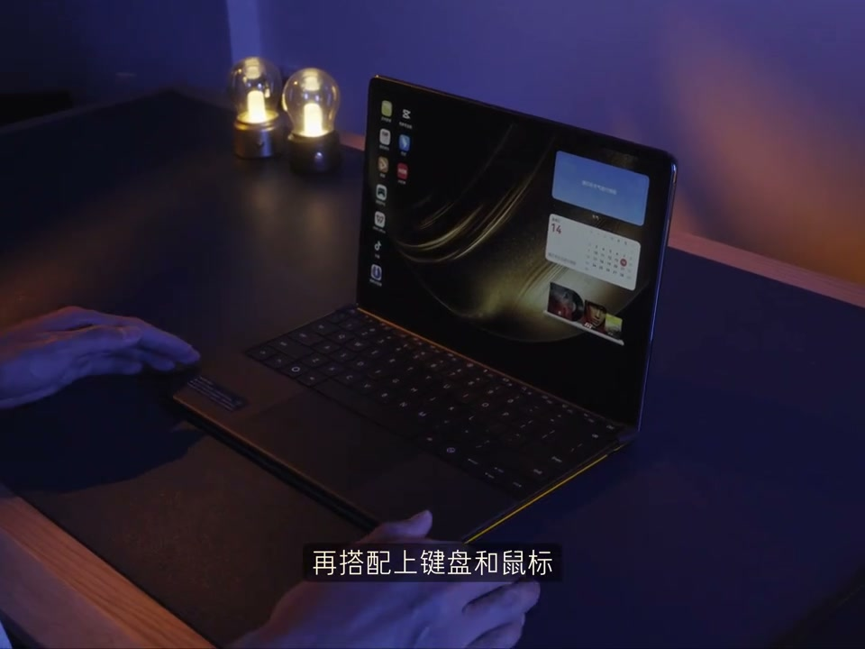

内容要点
[00:00] 你敢相信吗
[00:00] 看完这期视频
[00:01] 你的剪辑效率可以从
[00:04] 变成这样
[00:06] 一击一定要写脚本
[00:08] 这是我第一次写的脚本
[00:09] 而这是我现在写的脚本
[00:11] 一个详尽的脚本
[00:12] 能帮你在拍摄中使取百分之八十以上的麻烦
[00:15] 所以下次你可以打开剪音里的
[00:16] 创作脚本页面
[00:18] 写下你的大纲分镜和网案
[00:20] 拍摄时只需要按照计划执行变革
[00:22] 而且随着AI生产能力爆发时增长
[00:24] 在未来一段时间内
[00:25] 脚本的重要性一定会越来越强
[00:27] 一定要用快捷键
[00:29] 相信很多刚开始剪辑的新手
[00:30] 都不会用快捷键
[00:31] 甚至对学习快捷键存在底处心理
[00:34] 这么多案件
[00:34] 后面要记得红你马鱼啊
[00:35] 记不住 记不住
[00:36] 所以我给你的方案是不用记
[00:38] 没错 不用记 直接用
[00:39] 比如我们经常会遇到
[00:40] 想要只保留指神前面或者后面的情况
[00:42] 此处我们就要敲动键盘上
[00:44] 这两个箱铃键
[00:45] Q和W
[00:45] Q有个小尾巴
[00:46] 所以是留下后面的W
[00:47] 性格完随到此为止
[00:49] 像Ctrl加B可以快速切一刀
[00:51] 左键可以把指神快速定位
[00:53] 到上一针和下一针
[00:54] Alt加G可以快速新件幅的片段
[00:56] 这些常用非常好用的快捷键
[00:58] 我已经整理成清单送给大家
[01:00] 密集三一定要拍完马上剪
[01:02] 每次拍完视频以大堆素材
[01:04] 越拖你就会越不想剪
[01:05] 所以急拍机剪对提升效率很重要
[01:07] 但是遇到像出外景或出差时
[01:09] 我们不可能拎着一大坨台式机去剪辑
[01:11] 用手机呢
[01:12] 功能当然找效率很低
[01:13] 此时如果你用用一台
[01:15] 展开就能用到18英寸大屏笔记本
[01:17] 比如我手上这台红萌折叠电脑
[01:19] 那么随时随地剪辑
[01:20] 多场景办公也就不在画下
[01:21] 它在折叠形态下13英寸
[01:23] 日常出门随时生活装包都不重
[01:25] 而且相伴平时剪视频最常用的剪印
[01:28] 红萌系统也已经做了适配
[01:29] 在桌面上打开Apple
[01:31] 可以单纸对窗口代价进行缩放
[01:33] 如果想一遍搜素材同时剪辑的话
[01:35] 用三个手指这样上下抛出来
[01:36] 就能同时拥有两块屏幕
[01:38] 但是剪到一些比较精细的内容时
[01:40] 半屏确实勉强
[01:42] 此时我们就需要用五指对窗口进行放大
[01:44] 就能得到一个瀑布屏
[01:46] 在全场开转台下景
[01:48] 手指操作也可以比较流暂的
[01:50] 完成一些日常剪辑
[01:51] 当然在搭配上键盘和鼠标
[01:53] 那真的用家很爽了
[01:54] 平时用来看报告
[01:55] 浏览数据处理思路都非常合适
[01:58] 如果出门万代键盘
[01:59] 你也可以用八指换出虚拟键盘来使用
[02:01] 非常方便
[02:02] 当然周末用它来看电影也很不错
[02:04] 而且搭配上隔空滑动功能
[02:06] 我平时用它刷视频
[02:07] 甚至都不用触碰屏幕
[02:08] 刷到某个比较有灵感的画面
[02:10] 时也可以轻松抓取截图
[02:11] 随时丰富自己的灵感库
[02:13] 所以回到主题
[02:14] 最后给大家分享的一点就是
[02:15] 一定要搭建自己的灵感库
[02:17] 平时多看
[02:18] 多记录
[02:19] 多思考
[02:19] 在剪辑的时候才能快速列出方案
[02:21] 完成决策
[02:22] 就像这款红萌哲队电脑一样
[02:24] 虽然轻薄但关键时刻
[02:25] 能敞开用





